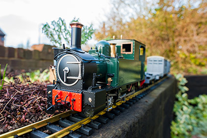
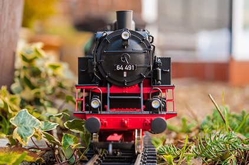
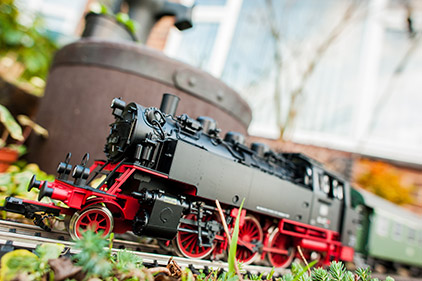

Garden Railways Limited
Martin's Models has moved from Herefordshire to Hertfordshire and is run by Janet and Graham Austin from their home in Bishop's Stortford.
Our stock
- Stockists of Regner Live Steam Locomotives, Stationary steam engines and Marine engines
- Accucraft Locomotives and Rolling stock
- Aristocraft Trains, Track and Accessories
- Bachmann Trains, Figures and Accessories
- Hillman's Rail Clamps
- LGB Trains and Accessories
- Peco Track
- Piko locomotives and Rolling stock
- Preiser Figures
- Pola Buildings and Figures
- Vollmer Buildings


Contact us
For prices, availability and details of all ranges, please feel free to contact us.
Email: graham@gardenrailways.co.uk
Tel: 01279 831641
Mob: 07836 293337
Address: 3 Plaw Hatch Close
Bishop's Stortford,
Hertfordshire,
CM23 5BL
